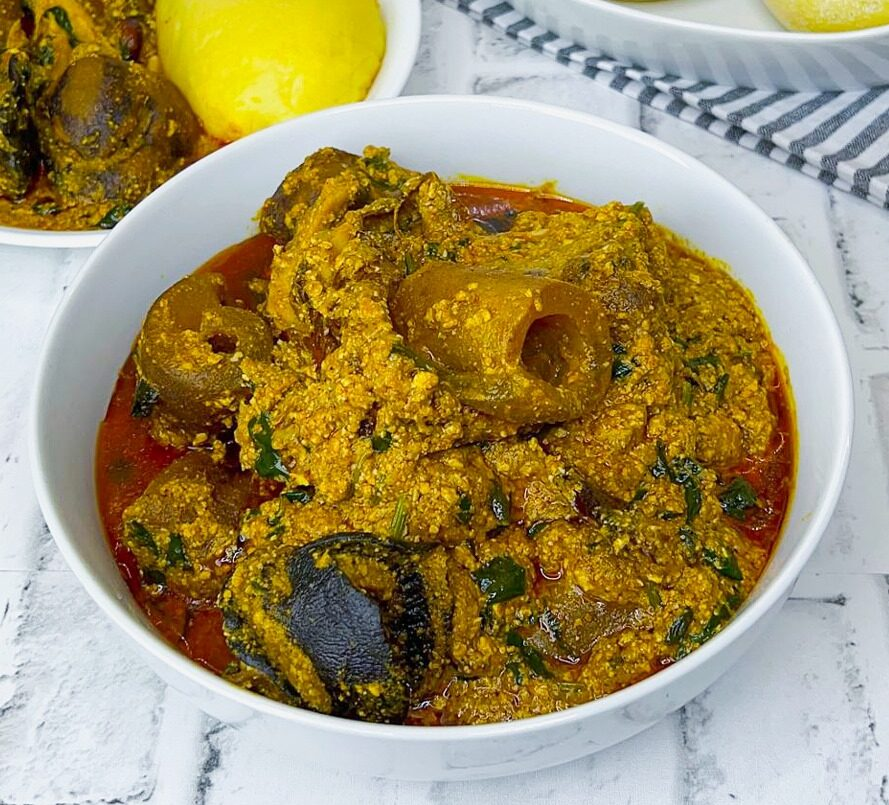

EGUSI SOUP

Ingredients list
- 2 cups ground egusi (melon seeds)
- 500g assorted meat & stockfish
- 2 cups washed spinach or ugwu
- 3 tbsp ground crayfish
- 3 scotch bonnet peppers
- 2 medium onions
- ½ cup palm oil
- 2 seasoning cubes
- Salt to taste
- 1 cup meat stock
- 1 tsp ground uziza seeds (optional)
- Locust beans / iru (optional)
Instructions
- Season and boil the assorted meat and stockfish until tender. Reserve the stock.
- Blend the scotch bonnet peppers and one onion. Mix the ground egusi with a little water to form a thick paste.
- Heat palm oil in a pot over medium heat. Fry the sliced onion briefly, then add the pepper blend and fry for 5 minutes.
- Add the egusi paste in spoonfuls and fry, stirring frequently, until golden and fragrant about 10 minutes.
- Pour in the meat stock, add crayfish, seasoning cubes, and salt. Stir in the cooked meat. Simmer for 15 minutes.
- Fold in the spinach or ugwu leaves and cook for a final 3 - 5 minutes. Serve with pounded yam or eba.
- Frying the egusi paste thoroughly before adding stock removes the raw taste and builds deep flavour.
- Nutritional Facts: View Nutrition Info